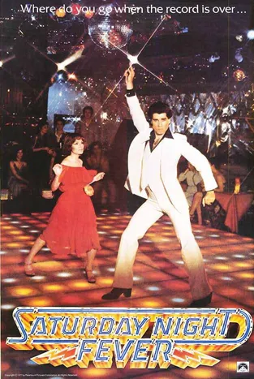

하우스는 바로 음악 장르를 말하는데요
이 하우스라는 장르에 대해 얘기를 하려면 디스코에 대해 먼저 이야기해야해요!
디스코는 처음에 뉴욕의 언더그라운드 파티 공간 로프트(The Loft)에서 시작된 음악이었어요.
언더그라운드에서만 들리던 이 디스코는
영화 <토요일 밤의 열기>가 큰 인기를 얻으며
대중들에게도 디스코가 퍼져나갔고 디스코는 전 세계적인 유행이 되었어요.

비지스가 참여한 영화의 사운드 트랙들은 빌보드 차트 1위를 하고,
당시 OST 역대 판매 최고 기록인 3,000만장이 넘는 엄청난 판매량을 기록할 정도였다고 해요.
이처럼 디스코의 인기가 커지자
시카고의 한 락 라디오 방송국은
주력 장르를 디스코로 바꾸면서
락 프로그램의 DJ였던 스티브 달(Steve Dahl)을 해고하게돼요
이 전부터 디스코에 반감을 갖고 있던 그는 MLB 메이저리그 팀인 시카고 화이트삭스와 함께
“디스코 앨범을 가져오면 야구 티켓 할인해주는”이벤트를 열었고,
수많은 사람들이 디스코 음반을 부수기 위해 경기장으로 몰려들었습니다.
이 사건이 바로 유명한 “디스코 폭파의 밤(Disco Sucks)” 운동의 시작이에요

이 사건을 계기로 1980년대 디스코 음악이 라디오에서 듣기 힘들어질 즈음에
시카고의 대형 게이클럽인 웨어하우스에서
디제잉을 하던 프랭키 너클즈가 디스코를 에디팅한 곡들에서 유래되었어요!

1980년대 초 시카고에서 시작되어
전 세계로 퍼진 음악 장르인
하우스 음악의
발전과 대중화에 중요한 역할을 하여
"하우스 음악의 대부"라고 불린다.
그는 소울, 펑크,재즈 등의 장르를
혼합하여 음악을 창작하였고
이는 후대 다양한 분류의
음악들에 많은 영향을 주었다.
한 설에 의하면 프랭키 너클즈가
'웨어하우스'에서 디제잉을 할 때
사람들이 인근 음반샵에서
'웨어하우스에서 틀던 음악'을 찾기 시작했고,
음반샵에서 이런 류의 음악을 따로 분류해서
팔던 것을 줄여서 '하우스'라는
이름의 유래가 되었다고 해요


하우스 음악에 깔린 비트를 듣다 보면 기계적으로 ‘찍어낸’ 느낌이 강하게 들텐데요!
하우스는 정적인 4/4박자를 사용하며 드럼 머신으로 찍어낸듯한 리듬이 특징이에요
이런 하우스 음악을 기반으로 개러지 하우스, 일레트로닉 하우스, 디트로이트 하우스, 딥 하우스 등
수 많은 하우스 음악의 하위 장르들이 탄생하게 되었답니다🎶
일렉트로 하우스는 말 그대로
‘전자맛’이 강한 하우스예요
베이스가 두껍고, 신디사이저 소리가
아주 강하게 치고 들어와요
비트가 빠르고, 드롭(beat drop) 부분에서
에너지가 폭발하는 게 특징이에요!
대표적인 케이팝으로는 블랙핑크의 붐바야가 있어요!
테크 하우스는 테크노(Techno)와
하우스(House)의 중간을 말해요
하우스처럼 4/4 리듬을 유지하면서도,
테크노처럼 미니멀하고 반복적인 사운드를 써요
복잡한 멜로디보다 ‘리듬감’과 ‘그루브’에 집중한 스타일이며
듣다 보면 비슷한 패턴이 계속되는데
이상하게 중독되는 느낌이에요
대표적인 케이팝으로는 에스파의 Whiplash가 있어요!
테크 하우스는 테크노(Techno)와 하우스(House)의 중간을 말해요
딥하우스는 하우스 중에서도 제일 부드럽고
감성적인 스타일이에요.
재즈, 소울, 알앤비에서 영향을 많이 받아서,
멜로디가 따뜻하고 리드미컬해요.
리듬은 여전히 4/4지만, 전체적으로 차분하고 분위기 있어요
대표적인 케이팝에는 샤이니의 View와 f(x)의 4walls가 있어요!
플러그앤비 하우스는 힙합의 하위 장르인 플러그(Plug)와
R&B를 결합한 '플러그앤비'에 하우스 장르의
드럼 비트와 베이스가 더해져,
Y2K 레트로 감성과 댄서블한 리듬을 동시에 지닌
독특한 음악 스타일을 형성해요
대표적인 케이팝에는 아일릿의 Magnetic이 있어요!
프로그레시브 하우스는 1990년대 초 영국에서
시작된 하우스 음악의 한 종류로,
점진적으로 변화하는 구조와
감정적인 멜로디가 특징적이에요
곡이 진행될수록 사운드가 천천히 쌓이고 변하며,
마치 하나의 “여정”처럼 느껴지게 만들죠!
대표적인 케이팝으로는 nct dream의 Trigger the Fever나 프로듀스101의 나야나 등이 있어요!
© 디미디 하우스 장르 알아보기 All rights reserved LEE DAEUN
Contact:daeun05720@seoultech.ac.kr